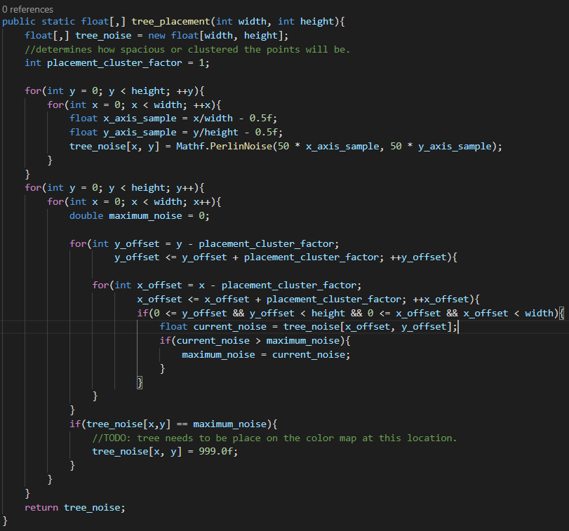

Color and Map Preview (10/21/2020)

For this week, I struggled to get my original placement algorithm to work, and implemented a poisson distribution algorithm to replace it. The poisson not only gives better results, it is also much more efficient. Access webbuild here: link
Poisson Implementation(6 hours)
For a good hour or 2, I was stuck on getting the naive algorithm for object placement to work. The algorithm is seen below:
Whenever I pressed the play button in the unity editor, the entire engine would freeze. In order to stop the freezing, I had to go into my task manager, and kill the unity process. At first, I though this was an issue with a debugger I was trying to setup. However, the actual problem was that the algorithm was too inefficient. Essential, for the height and width dimensions, the algorithm would attempt to use x_offset and y_offset to compute maximal noise values to store in the tree_noise map. What ends up happening is that the number of iterations those inner for loops (x_offset,y_offset) increases as the width and height increases. So it you have a 50x50 input, the number of loops necessary for the algorithm would roughly be 50*50*(1.....50)(1.......50):
After I realized how severe the algorithm was to runtime, I gave up on getting it to work. Instead, I focused my attention on implementing a poisson disc instead. The idea behind this algorithm is that you generate points around pre-existing values, then check to see if they are within a minimum distance. If they are, then we can add them to an output list. To speedup the lookup of points in the algorithm, we store a grid of points that have been generated so far. The result of the algorithm are far better than just randomly picking points, as it looks for discernible patterns in the distribution. A visualization of the poisson disc is avaliable at devmag.org. The following picture illustrates the usefulness of poisson:

While implemented the algorithm, I struggled with various bugs that were time-consuming to resolve. One issue was with how I was attempting to test if my implementation was working. After generating the points, I attempted to draw them out in the editor using gizmos. For a while, the points were not being drawn out at all:
I forgot the switch on the tiny "gizmos" button in the editor! In addition, the object attached to the gizmos must be in view of the camera; when I created objects to place the test script, they were generated at far away locations. Changing the locations to (0,0,0) and turning on the gizmos button got the script to work:
Due to time constraints, to demonstrate the possion disc can work with the color map, I iterate through the disc points, and replace pixels where the points are roughly located with a black color. As a result, you will notice that many of the pixels in the image are darker.
With this implementation working, we can modify the code to place objects on top of the map instead of simply overwriting the colors. This will come in the next week or so.